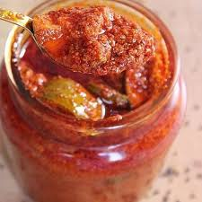

🥭 Athanu (Gujarati Mango Pickle)

Ingredients
- 4 cups raw mango (cut into small cubes)
- 1/2 cup salt (non-iodized)
- 1/2 cup mustard seeds (split or crushed)
- 2 tbsp fenugreek seeds (methi dana)
- 1/2 cup red chili powder (adjust to taste)
- 1 tsp turmeric powder
- 1/4 tsp asafoetida (hing)
- 1.5 to 2 cups mustard oil
Instructions
- Wash and dry the mango pieces thoroughly. Let them air-dry to remove moisture.
- Mix mango cubes with salt and turmeric. Keep in a jar for 2 days, stirring once daily.
- After 2 days, add crushed mustard, fenugreek seeds, red chili powder, and hing. Mix well.
- Heat mustard oil until smoking. Let it cool completely before pouring over the mango mixture.
- Mix well and store in a clean, dry glass jar. Keep in a warm place for 7–10 days for proper fermentation.
- Once ready, refrigerate or store in a cool dry place. Stir occasionally with a clean spoon.
Serve With
- Thepla, puri, or paratha
- Gujarati thali meals
- Khichdi or plain rice
💡 Tip: Always use a dry spoon to avoid spoilage. Athanu lasts for months when stored properly.